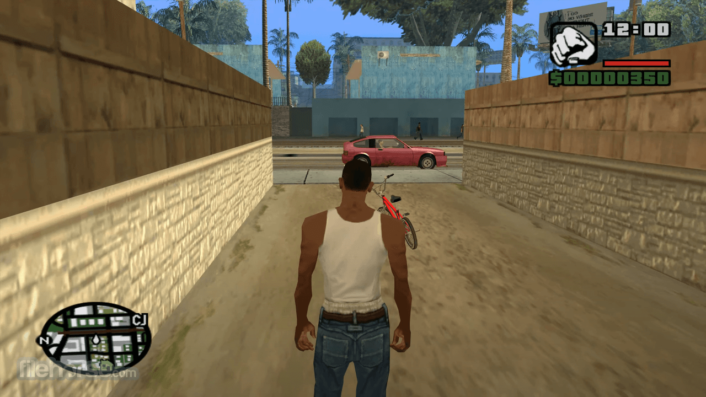
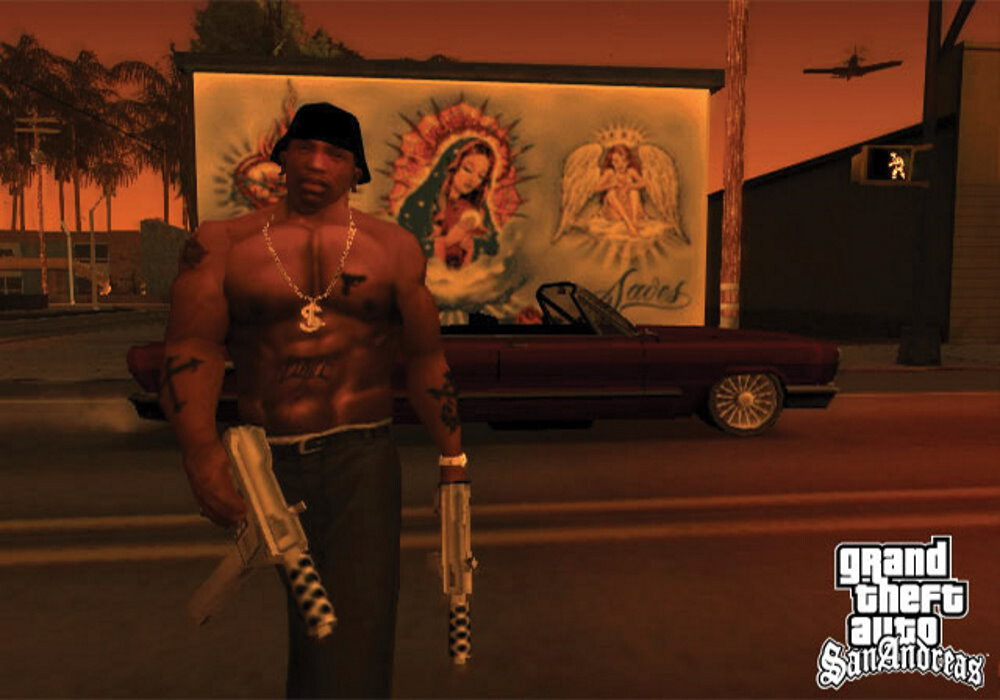

GTA San Andreas
 
Grand Theft Auto: San Andreas es un videojuego de acción-aventura de
mundo abierto desarrollado por Rockstar North y publicado por Rockstar
Games. Fue confirmado oficialmente por la mencionada Rockstar Games a
principios de marzo de 2004, y su fecha de lanzamiento tentativa se
programó para el 19 y 22 de octubre de ese año para América del Norte y
Europa. Distribuido por Take-Two Interactive, San Andreas fue lanzado
originalmente para PlayStation 2 el 26 de octubre de 2004, aunque
posteriormente se publicaron distintas versiones, tanto para
videoconsolas de sexta, séptima y octava generación, así como
ordenadores, y teléfonos inteligentes.
La trama del juego ocurre en San Andreas, estado ficticio que contiene a tres ciudades metropolitanas:
Los Santos, San Fierro y Las Venturas; las tres basadas en las ciudades
de Los Ángeles, San Francisco y Las Vegas, respectivamente, siendo el
segundo mapa más extenso de la saga detrás de GTA V. Ambientado en 1992,
la obra cuenta la historia de Carl Johnson “CJ”, quien decide volver a
Los Santos tras cinco años de haberse ausentado en Liberty City —ciudad
de otros videojuegos de la saga como GTA III, GTA Liberty City Stories o
GTA IV— después de enterarse del asesinato de su madre. Al llegar, CJ
intenta restablecer el poder de su antigua banda y su familia, mientras
desvela poco a poco la verdad detrás de la muerte de su madre. Su trama
se basa libremente en sucesos como la rivalidad entre las pandillas
Bloods y Crips, la epidemia de crack, el escándalo Rampart y los
disturbios de Los Ángeles de 1992.